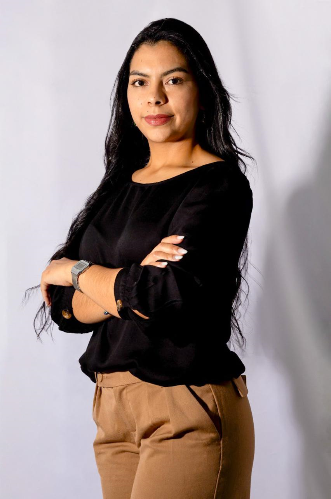

Profesional en Realización Audiovisual | Estudiante de Administración Tecnológica

Profesional Administrativa con experiencia en atención al cliente, gestión documental, apoyo contable y coordinación administrativa.
ContactarmeSoy Lucy Arenas Valbuena, estudiante de Administración Tecnológica, Profesional en Realización Audiovisual y Técnica en Gestión del Talento Humano.
Profesional organizada, proactiva y comprometida, con más de dos años de experiencia en áreas administrativas y atención al cliente, desempeñando funciones relacionadas con gestión documental, apoyo a procesos contables, manejo de bases de datos, facturación, control de inventarios y coordinación de equipos de trabajo.
Complemento mi perfil con formación y experiencia en la realización de proyectos audiovisuales y espectáculos, participando en procesos de preproducción, producción y postproducción de piezas audiovisuales y televisiva.
Me caracterizo por mis habilidades comunicativas, capacidad de trabajo en equipo, resolución de conflictos, adaptabilidad al cambio, iniciativa para el aprendizaje continuo, compromiso, y orientación al logro de objetivos.
01/2024 - 02/2025
02/2025 - Actualidad